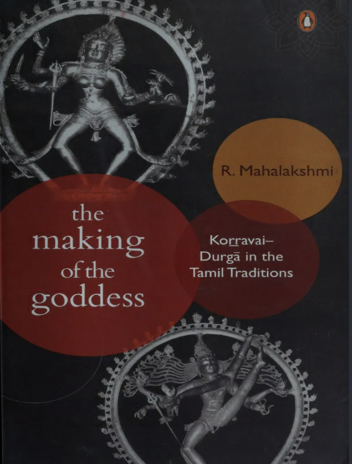
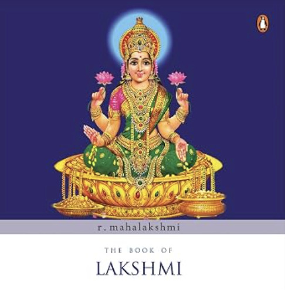
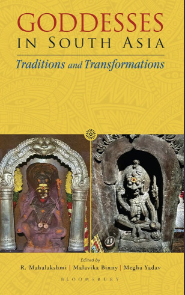
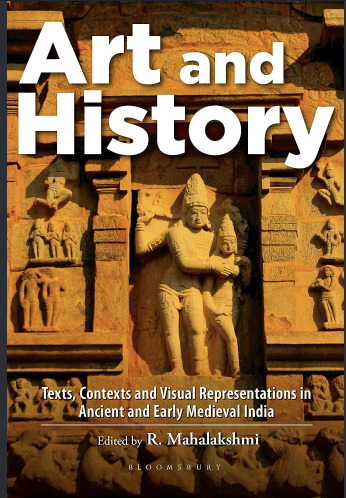
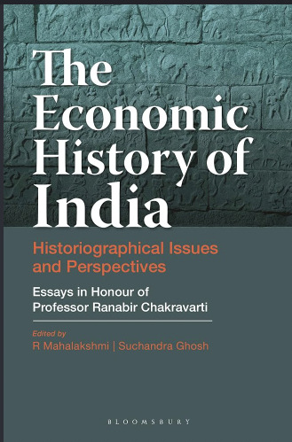
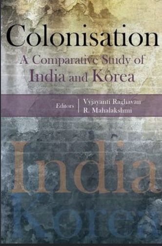

Prof. R. Mahalakshmi
Historian, Professor of Ancient & Early Medieval South Asia
One of the most important academics in the field of ancient and early medieval Indian and South Asian history. Her scholarly research spans religious iconography, textual hermeneutics, premodern state formation, and social history across premodern South Asia.

Authored Books

The Making of the Goddess: Korravai-Durga in the Tamil Traditions
Penguin India
Traces the evolution of the goddess deity in Tamil society. Awarded the Professor Hiralal Gupta Prize for the Best Book by a Woman Historian from the Indian History Congress.

The Book of Lakshmi
Penguin Viking
Explores the mythical and historical development of the Hindu goddess Lakshmi, weaving together ancient texts, iconography, and everyday customs.
Edited and Co-authored Volumes

Goddesses in South Asia: Traditions and Transformations
Co-edited with Malavika Binny & Megha Yadav
An extensive study focusing on regional iterations and contemporary shifts of Hindu female deities across South Asia.

Art and History: Texts, Contexts and Visual Representations in Ancient and Early Medieval India
Bloomsbury
An edited anthology bringing together scholarly essays exploring the intersections between textual prescriptions, timelines, and visual art.

The Economic History of India: Historiographical Issues and Perspectives
Co-edited alongside Suchandra Ghosh
A tribute volume published in honour of Professor Ranabir Chakravarti analyzing key historiographical perspectives in Indian economic history.

Colonisation: A Comparative Study Of India & Korea
Co-authored with Vyjayanti Raghavan
A comparative political and historical evaluation examining colonial trajectories and institutional developments across India and Korea.